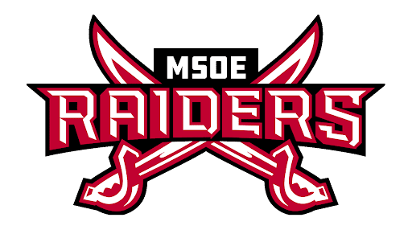
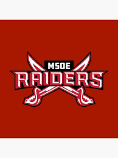

About Me
Hi! I'm Adrian Manchado, an Applied AI Engineer and Machine Learning researcher pursuing concurrent B.S. Computer Science and M.S. Machine Learning degrees at Milwaukee School of Engineering (MSOE) with a perfect 4.0 GPA.
As an Applied AI Intern at Direct Supply, I built Fabrics.AI—a solo-designed enterprise solution that saved 10,000+ hours/year for the Design Team, serving 20+ users with 40,000+ embedded fabrics using OpenAI, AWS, and Databricks. I've also developed IoT-integrated training platforms and led volunteer initiatives connecting 100+ interns with senior care facilities.
I'm passionate about causal reinforcement learning, computer vision, and NLP. As MSOE AI Club Research Mentor, I lead projects like our Machine Learning Video Analysis System for soccer statistics using YOLO, TensorFlow, and custom CNN models. I'm also researching causal reinforcement learning to improve credit assignment in decision-making systems.
Balancing 20 hours/week as NCAA Soccer Team Captain (NACC Champions 2024!) with 10 hours/week mentoring and full-time graduate coursework has taught me discipline, time management, and leadership. I'm a UIF Stanford member, Tau Beta Pi Secretary, and NVIDIA ROSIE Supercomputer Challenge Finalist.
My mission: leverage AI and machine learning to create real-world impact—from optimizing enterprise workflows to advancing reinforcement learning research. Let's build the future together!
Experience
Direct Supply
Applied AI Intern
Fabrics.AI Platform: Solo-designed enterprise AI solution providing real-time fabric availability and pricing.
- Built React application on AWS with hourly data ingestion pipeline (S3) serving 20+ users and 40,000+ fabrics
- Implemented Selenium web scraping for automated image collection and OpenAI image embeddings for recommender system
- Leveraged ChatGPT Nano for fabric classification and created Databricks table architecture
- Impact: Saved 10,000+ hours/year for Design Team, provided API for cross-platform fabric data access
Maintenance Staff Training Platform: IoT-integrated onboarding system for senior care facilities.
- Engineered React-based AWS application with interactive facility maps and real-time TELS API integration
- Deployed ESP32 IoT devices with Flask server for asset health monitoring and anomaly detection
- Connected sensor data to Fix.AI's RAG model for AI-driven troubleshooting guidance
Leadership: Intern Advisory Board Member - coordinated 5 volunteer events at 2 senior care facilities, bringing 40+ interns on-site.
New World Now
Software Development Intern
Event Attendance Tracking App: Full-stack refactorization enabling QR code training authorization.
- Developed endpoints, frontend logic, and database calls using Angular, C#, TypeScript, SQL - now in production
- Architected identity provider integration and designed 12 client-branded sites from single codebase
- Collaborated using Scrum framework with documented processes for team duplication
- Presented final product to nationwide clients - app now part of production catalog
Additional Professional Experience
Various Roles
- Sales Agent - Cardamomo Flamenco, Madrid (May-Aug 2023, 40 hrs/week)
- Industrial Manager - Juanjo SA (May-Aug 2022, 30 hrs/week)
- IT Help Desk Assistant - Cardinal Stritch University (Feb-May 2023, 20 hrs/week)
- Business Office Assistant - Cardinal Stritch University (Feb-May 2023, 20 hrs/week)
Education
Milwaukee School of Engineering (MSOE)
August 2023 - December 2026M.S. Machine Learning | Expected December 2026
B.S. Computer Science | Expected May 2026 | GPA: 4.0
Leadership & Involvement:
- NCAA Soccer Team Captain - 20 hrs/week, NACC Champions 2024, NCAA Tournament Participant
- AI Club Research Mentor - Leading computer vision and RL research projects (10 hrs/week)
- UIF Stanford Member - Entrepreneurship focused (5 hrs/week)
- Tau Beta Pi Secretary - Engineering Honor Society (3 hrs/week)
- Former Treasurer - Competitive Programming Club (2024)
Cardinal Stritch University
Aug 2022 - May 2023Computer Science Coursework | GPA: 4.0
Colegio el Caton, Spain
Sept 2016 - May 2022High School Diploma | GPA: 3.83
Research & Projects

Machine Learning Video Analysis System
AI Club Research Project: Computer vision system for soccer game statistics tracking
- Utilized YOLO + OpenCV for player detection with K-means clustering for team assignment
- Built custom TensorFlow/Keras CNN detecting 12 field points with high precision
- Designed geometric algorithms for 2D field mapping and ball detection via frame normalization
- Generated labeled dataset with augmentation (shift, crop, zoom) for model training
- Tracks possession %, chances, attacking heatmaps automatically from video input
Result: Production system delivering actionable insights to coaches and players

Causal Reinforcement Learning Research
Graduate Research: Advancing credit assignment in sequential decision-making
- Investigating RL with causal reasoning using Structural Causal Models (SCMs)
- Developing counterfactual credit assignment (CCA) beyond temporal difference learning
- Exploring causal off-policy evaluation and counterfactual policy optimization
- Testing in gridworlds, bandits, and healthcare decision simulations
- Goal: Enhance interpretability and quantify causal impact of individual actions
Impact: Improving AI decision-making transparency and policy evaluation

Discovery World AI Chatbot
MSOE Hackathon Winner: Multilingual AI exhibit guide (Team of 5)
- React frontend with FastAPI backend for real-time communication
- Integrated Llama for text generation, Whisper for speech-to-text
- OpenAI Text-to-Speech for audio responses with multilingual support
- Dynamic difficulty adjustment based on user selection
Result: Fully functioning multilingual chatbot enhancing museum visitor experience

Soccer Practice Generator & Stats Tracker
Live Production Website: Team of 6 | raider-stats.com
- React + Python API + PostgreSQL full-stack architecture
- Deployed on AWS (Amplify + Lambda) with secure login system
- Generates practice teams and tracks player performance statistics
- Used daily by MSOE Men's Soccer Team coaches and players
Result: Production app supporting daily operations and performance tracking
Autism Screening AI - Next-Step Clinic
- React interface with FastAPI backend and SQL database
- OpenAI integration for patient-resource matching with encrypted transmission
- Embedded system finding best-fit resources based on patient profiles
Result: Optimized clinic workflow and improved patient satisfaction
View CodeAwards & Achievements
🏆 NVIDIA ROSIE Supercomputer Challenge - Finalist
Selected as finalist for advanced AI/ML research proposal using NVIDIA's supercomputing resources
⚽ NACC Conference Champions 2024 & NCAA Tournament Participant
MSOE Men's Soccer - First championship in 10 years as Team Captain
🎓 6x High Honors Dean's List
Maintained perfect 4.0 GPA while balancing 20 hrs/week NCAA athletics and leadership roles
💻 4th & 5th Place - MICS Programming Competition
Midwest Instruction and Computing Symposium competitive programming achievements
Technical Skills
- TensorFlow
- Keras
- YOLO
- OpenCV
- PyTorch
- Reinforcement Learning
- Computer Vision
- NLP
- LangChain
- RAG
- CNN
- LLM as Judge
- Python
- C++
- C#
- Java
- JavaScript/TypeScript
- React
- Angular
- FastAPI
- Node.js
- Flask
- AWS (S3, Lambda, Amplify)
- Terraform
- Databricks
- Docker
- PostgreSQL
- MongoDB
- Firebase
- Pandas
- NumPy
- Scikit-learn
- Matplotlib
- Seaborn
- Selenium
- Git/GitHub/GitLab
- Scrum/Agile
- IoT (ESP32)
- Data Structures & Algorithms
- Statistical Testing
- Spanish Fluency
Get In Touch
I'm actively seeking opportunities in Applied AI, Machine Learning, and Full-Stack Development!
Whether you're interested in research collaboration, internship opportunities, or just want to connect—I'd love to hear from you.
Email: adrimanca12@gmail.com
Phone: (414) 200-1559
Location: Milwaukee, WI